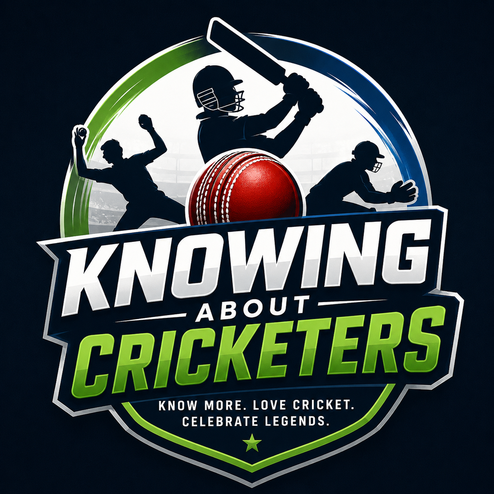
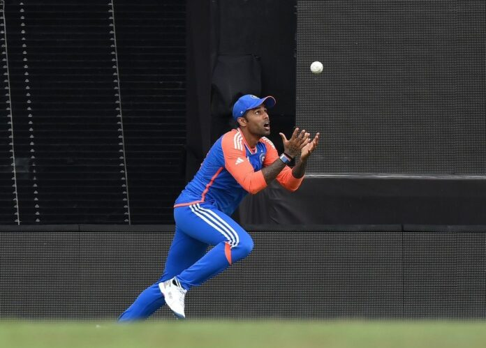

KNOWING ABOUT CRICKETERS
Explore the lives, achievements, statistics, and records of famous cricket players from around the world.

KNOWING ABOUT CRICKETERS is a modern and informative cricket website created for cricket fans who want to explore the lives and achievements of famous cricketers. The website provides player profiles, career statistics, international records, centuries, runs, personal information, and major achievements of legendary cricket players.
Users can easily search for their favorite cricketers through a functional search bar and open separate detailed webpages for each player. The website is designed with an attractive interface, smooth navigation, and responsive layout to give users an enjoyable and interactive cricket learning experience.